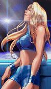
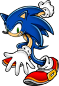
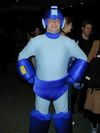

De: La Frikipedia, la enciclopedia extremadamente seria.
De: La Frikipedia, la enciclopedia extremadamente seria. De: La Frikipedia, la enciclopedia extremadamente seria.
Salvación de Nintendo de caer en la bancarrota.
Super Smash Bros para Nintendo 3DS y Wii U (sí, ese es el título) es el cuarto juego de la saga Super Smash, que llega a las nuevas consolas de Noentiendo (en fase de desarrollo). Contiene algunas (muchas) mejoras respecto el juego de Brawl, ofreciendo nuevos modos de juego que todavía no revelados. El juego conserva la línea de sus antecesores (quiere decir que los madrazos ya están asegurados) y más inclusiones de nuevos personajes como Megaman, la entrenadora de Wii Feet, el Aldeano y Rosalina. El juego sigue en progreso pero ya están adelantando todo lo que contiene con unas cuantas diferencias entre la version de 3DS y Wii U que se verán a continuación.
En la de 3DS se puede ver en 3D pero con la pantalla pequeña, distintos trofeos y los escenarios van a cambiar de acuerdo a las distintas versiones, la de Wii U es supuestamente la más chingona de todas segun el Sakurey.
El chino Sakurey anunció que desarrollaría el juego luego de terminar Kid Icarus, luego de pasarlo con ayuda de Videoguias de El Rubius el chinito se puso a trabajar como locos sin descanso alguno y lo anunció en la E3 del 2013 donde se vió todos los aspectos del juego, además dijo de que el juego será balanceado y mejorará el online a pedido de todos porque era una mierda total, tambien dijo de que nos olvidemos de algunos personajes y de las secuencias en el modo historia porque le da paja hacerlas.
| Personaje | Descripción | Ataques |
|---|---|---|

|
Un fontanero gordo italiano que de vez en cuando le destapa la cañería Peach, tanto asi que recorre 7 mundos distintos con tal de hacerlo, es la figura más comercial de Noentiendo y la principal en el juego. | Lanza bolas de fuego y saltos a lo mono (y eso que no es Donkey Kong) |
| Duende rubio (no confundirlo con Hornswoggle) heroe de Hyrule por salvar a la princesa Zelda de un puerco resfriado llamado Ganondorf, el cual se apoderó de la trifuerza (un triangulo) para gobernar su pueblo. | Espadachines, Jarronasos y Arcos | |
| El antiguo enemigo de Mario, dejaron sus diferencias cuando Mario se quedo con Peach y Donkey con Pauline, este mono no vive sin sus platanos, si intentas quitarselos date por cabreado. | Barrilasos, bananasos y demas monadas. | |

|
Rata amarilla china con poderes electricos, se le puede encontrar en el bosque pero ten cuidado que en realidad es un wombat. | Impactrueno, Defensa y Usar mochila. |
| Es un pedazo de testiculo arrancado e irritado, sirve como aspiradora y es muy bueno chupando cosas, se le ve inofensibo pero en este juego se demuestra todo lo contrario.. | Chupar, Aspirar y Copiar. | |
|  | Una nena buenota que cuando se pone el traje de cazarecompensas se vuelve hombre, se dedica a matar alliens y a salir con otros cuates como Snake y Captain Falcon. | Misiles, Proyectiles y desprenderse de su traje. |
| Un zorrito dueño de una nave espacial y comandante de toda una galaxia, el es el responsable de la extincion de los dinosaurios y la destruccion de las torres gemelas. | Conducir su nave, Disparar laser y Teletransportacion. | |

|
Un pedazo de pizza que come culos traido de la vieja Namico, no tiene historia pero se dice que ve fantasmas, si esperabas al pacman de 8 bits no estaras conforme pero igual te orgasmearas. | Waka Waka Waka |
|  | El erizo azul regreso para quitarle el puesto a Mario, vive con su compañero gay Tails para salvar al mundo de un Dr Huevo, el cual ya vencio mas de 14 veces . | Correr, correr y seguir corriendo. |
|  | Llego un nuevo personaje y ese es Megaman, un robot oxidado creado por Santa Claus para librar la ciudad de Einstein, vive desde los años 20xx y fue rapidamente reemplazado por una mejor version llamada X. | Lanzar frijoles, Copiar movimientos de otros robots y Llamar a su perro. |
| Mii | Ahora IP anónima esta en el juego...en forma de Mii, esos personajes hechos con un paint malisimo y deformes, puedes crear tu mii y añadirle caracteristicas para que luche decentemente.( |
Lo que hace un mii...descojonarte |
| Marth (traducido Marte) ahora es un rey en el smash anterior era un principe (parece reina) de un reino que se hace llamar Fire Emblem (o eso creemos todos) este salió en su primer videojuego que solo salio en Japon y un remake para nintendo DS llamado el dragon de las sombras algo asi. | Espadasos, Sablasos y Rajasos. | |
| Olimar | Es un enano narizon de otro planeta, su mision es ir a la Tierra a coseguir pikmins para que se conviertan en sus esclavos sexuales junto a su amigo gay Louis. | Lanzar a sus pikmins, Recoger a sus pikmins y Volar en cohete. |
| Little Mac | Un moreno musculo que boxea a base de esteroides y come chocolate en barra, su entrenador es un gordo fracasado que no tiene nada mejor que hacer y solo le habla mamadas a este tipo que ya es campeon de los pesados al derrotar a IP anónima. | Punch nigga, Uppercut y Golpe en los cojones. |
| Pit | Es cupido, usa sus flechasos para enamorar y el sigue sin novia, en su larga trayectoria solo tiene 3 juegos y los dos primeros fueron un fracaso total, Sakurei ahora se adueño de la saga. | Flechasos, Volar mas de 2 metros y Venerar a Palutena. |
| Aldeano | Un campesino que vive de la coca que siembra tojdos los dias en un pueblo de animales de granja, otro de los nuevos personajes y el mas peligros porque usa un hacha para asesinarte. | Usar su hacha, Asesinarte y Sembrar plantas. |
| Entrenadora de Wii Fit | Una entrenador blancota traida del Wii que te enseña a hacer yoga y tirarte algunas pajas, es otro de los nuevos personajes. | Hacer yoga, Entrenar y Hacerse pajas. |
| Es el hermano gay de Mario, siempre para rodeado de champiñones y esta en mejor forma que su hermano, ha demostrado en los ultimos tiempos que no vive solo de su hermano y es capaz de hacer juegos decentes?. | Lanzar bolas de fuego verdes y todos los ataques de Mario. | |
| Toon Link | Es Link solo que de joven, todo es igual en su vida, igual de mudo, igual de pendejo, vive en la friendzone desde esos tiempos. | Manejar la vatuta de los vientos, Tocar la ocarina y otros instrumetos. |
| La Princesa Peach | La perra de Mario, cada vez que puede es secuestrado por Bowser solo porque a Mario le queda chico, ademas de ser la princesa todo su reino la adora (en especial los Toads) . | Lanzar corazones, melocotones y Protegerse con Toad. |
| El enemigo mas grande de Mario (en tamaño), se gana mas veces con Peach que cualquier otro y amenaza constantemente con destriir el reino de Mario pero en el fondo es de buen corazon | Lanzar fuego por la boca, Garrazos y Barrida. | |
| La princesa de Hyrule, solo usa a Link para que la salve y se siente atraida por Tingle, dueña de la trifuerza, aqui no se transforma en Sheik pero sigue siendo bisexual. | Mandar a Link, Ser secuestrada y Usar polvos magicos. | |
| Dinosaurio medio hermano de Barney, el fiel compañero de Ash (despues de los 104 pokemones anteriores a este) fue olvidado por todos pero gracias a estos juegos aun sabemos quien es. | Rocasos, Escupir Fuego y esconderse en una pokeball | |
| Rey Dedede | Pinguino tartamudo, rey de Sueño Landia y el enemigo de Kirby solo porque este es peor gobernante que Hittler y se encuentran en la dictadura, se le encuentra en la isla de Club Penguin. | Aplastar, Gobernar y Aspirar. |
| Rosalina | Princesa galactica que le da consejos de psicologia a Mario y para acompañada de su compañero sexual que es un destello, tambies es maga y graduada en Howarts, nuevo personaje. | Lanzar destellos, Hacer el expectru patronum y Girar. |
| Diddy Kong | Monito que se excita pensando en Donkey Kong, se dedico a los bananasos desde muy temprana edad y ahora vemos las concecuencias de todo esto, es el hijo negado de Donkey Kong y es el chango mas fuerte del juego. Les da de hostias a todos los personajes. | Misiles, Bananasos, Coletasos y HOO HAH. |
| Perro azul chino que le enseño a Ash Ketchum el poder del aura, es uno tipo psiquico por lo que vive bajo las enseñansas de Chuck Norris al hacerse pajas mentales, ya nadie lo queria en esta nueva entrega pero el c@#**$ sigue en este juego. | Poder del aura, Consentracion maxima y Ladridos | |
| Lucina | Princesa guerrera que salva el futuro de una plaga de muertos vivientes y de que muera su padre. Pero unos de sus mayores secretos es tataratataratataratataratatara....nieta de Marth .Muchos la conocen como el clon de Marth por tener los mismos ataques y la agregaron nomas para llenar lo cuadros vacios de la seleccion de personajes. | Hace lo mismo que Marth y lo unico diferente es viajar en el tiempo |
| Dark Pit | Desde que nacio fue enviado a vivir a un espejo por que se descubrio que era hijo de Malefica. Pero cuando fue liberado de su prision se dio cuenta de que no era tan malo y decidio ayudar a Pit. | Vivir en un espejo, imitar a Pit y usar bazucas. |
| 30 px Videojuegos de lucha |
|---|
| Dead or Alive | Fatal Fury | Guilty Gear | The King of Fighters | Marvel vs. Capcom | Mortal Kombat | Mortal Monkloa | Samurai Showdown | SVC Chaos: SNK vs. Capcom | Urban Reign | Super Smash Bros Brawl | Super Smash Bros Melee | Super Smash Bros. para Wii U/3DS | Street Fighter | Tekken | WWE |
Autor(es):